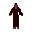
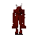
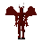

Ashes
| Config name | ashes |
| Item id | 592 |
| Value | 2 gp |
| Weight | 2oz |
| Members | No |
| Tradeable | Yes |
| Stackable | No |
| Defined in | scripts/skill_firemaking/configs/firemaking.obj |
Ashes
A heap of ashes.
Dropped by
| NPC | Level | Quantity | Rarity | Via | Notes |
|---|---|---|---|---|---|
| 82 | 1 | Always | |||
| 92 | 1 | Always | |||
| 172 | 1 | Always | |||
| 2 | 1 | Always | |||
 Imp | 3 | 1 | Always | ||
| 170 | 1 | Always | if getbit_range(%crest_spells_levers_gauntlets, ^crest_wind_blast_used, ^crest_fire_blast_used) = ^crest_all_spells_cast | ||
 Lesser demon | 82 | 1 | Always | ||
| 35 | 1 | Always | |||
| 91 | 1 | Always | |||
 Doomion | 91 | 1 | Always | ||
| 91 | 1 | Always | |||
| 2 | 1 | 3/64 (4.69%) |
Quests
Dragon Slayer Legends Quest Underground Pass Waterfall
Referenced in scripts
scripts/areas/area_draynor/scripts/aggie.rs2scripts/drop tables/scripts/imp.rs2scripts/quests/quest_dragon/scripts/melzars_maze.rs2scripts/quests/quest_legends/scripts/nezikchened.rs2scripts/quests/quest_upass/scripts/doomion.rs2scripts/quests/quest_upass/scripts/holthion.rs2scripts/quests/quest_upass/scripts/othainian.rs2scripts/quests/quest_upass/scripts/quest_upass.rs2scripts/quests/quest_upass/scripts/upass_journal.rs2scripts/quests/quest_waterfall/scripts/quest_waterfall.rs2scripts/quests/quest_waterfall/scripts/waterfall_journal.rs2scripts/skill_firemaking/scripts/firemaking.rs2scripts/tutorial/scripts/skills/tut_firemaking.rs2